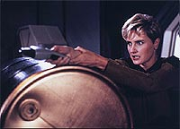
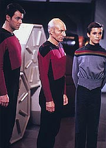
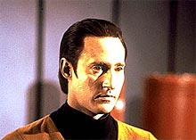
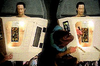

|
MANCHETE
DO EPISDIO
Histria
criada para contar origens de
Data apela para clich do irmo malvado
Episdio
anterior | Prximo
episdio
Sinopse:
Data Estelar: 41242.4.
 A
Enterprise ruma para o planeta natal de Data, em Omicron Teta, para
descobrir o que houve com os 411 colonos que viviam no sistema,
desaparecidos h 26 anos.
Chegando l, encontram o remanescente do que parece ser uma outra
verso de Data e o levam a bordo da Enterprise.
Na nave, o andride reativa seu "irmo", Lore.
Aparentemente, Lore uma duplicata perfeita de Data, com apenas
uma importante exceo: ele equipado com emoo... e com uma
mente distorcida, que ameaa toda a tripulao da Enterprise,
levando-a a uma armadilha envolvendo uma imensa criatura cristalina
no espao --a mesma que foi responsvel pela morte dos colonos.
Graas perspiccia de Wesley Crusher, que descobre que Lore est
se fazendo passar por Data e que o tripulante andride na verdade
est desativado em seus aposentos, que a tripulao consegue
evitar os planos do malvolo andride, transportando-o para o espao.
Aps perder contato com Lore, a Entidade Cristalina abandona a regio.
Comentrios:
"Datalore" um episdio que trabalha as
origens de um dos personagens principais da srie. atravs
deles que aprendemos as informaes bsicas sobre o passado e a
criao de Data.
 O
enredo gira em torno de um conceito mais comum em novelas da Globo
do que em sries de fico cientfica: a imortal histria do
irmo gmeo malvado. Apesar de a histria ser um dos maiores
clichs da dramaturgia televisiva, inegvel que Lore, a cpia
malvola de Data, tem um certo "appeal".
Isso porque ele mostra que a criao de um andride mais emotivo
(mais humano) no uma impossibilidade tcnica (como expressado
diversas vezes durante a Srie Clssica), mas uma questo de opo.
Lore no s emotivo como mentalmente desequilibrado. E o ator
Brent Spiner faz muito bem seu papel. O tique nervoso e o sorriso irnico
so marcas registradas do personagem, que ainda voltaria em "Brothers"
e "Descent".
O episdio tambm envolve um outro elemento que voltaria mais
tarde srie: a Entidade Cristalina que matou todos os habitantes
da colnia em que Data foi concebido.
 Em
termos de produo, as tomadas da Enterprise e da Entidade
Cristalina so eficientes, assim como os cenrios do laboratrio
do dr. Noonien Soong, o criador dos andrides. J o cenrio
externo do planeta --lembrando ainda o estilo "trash" da Srie
Clssica-- deixa a desejar.
Mas o pior destaque tcnico vai para Lore desmontado. Suas peas no
do nem a impresso de que poderiam ser reunidas para formar um
andride to capaz quanto Data. E o rosto do manequim nem se
parece direito com Brent Spiner (principalmente em razo do cabelo,
falso at dizer chega).
 No
fim das contas, "Datalore" uma histria
interessante e um dos nicos episdios da primeira temporada que
conseguiu desenvolver um pouco um dos personagens regulares, embora
ainda muito timidamente.
Mas nele que encontramos uma das cenas mais clebres de todos os
tempos em Jornada nas Estrelas, onde o capito Picard e a
doutora Crusher fazem o que todos os fs gostariam de fazer:
"Cale a boca, Wesley!".
Citaes:
Data - "If you
had an off switch, Doctor, would you not keep it a secret?"
("Se voc tivesse um interruptor, doutora, no guardaria
segredo?")
Picard - "Shut up, Wesley!"
("Cale a boca, Wesley!")
Beverly - "Shut up, Wesley!"
("Cale a boca, Wesley!")
Data - "How sad, dear brother. You make me wish I were an
only child."
("Que triste, caro irmo. Voc me faz desejar ser filho nico.")
Trivia:
 Num raro "blooper" de dilogo, ao gravar o dirio de
bordo do grupo avanado, ao invs de dizer "Data Estelar:
41242.5", Jonathan Frakes (Riker) diz: "Data Estelar:
4124.5", o estilo de Data Estelar com 5 dgitos utilizado na Srie
Clssica. Na Nova Gerao, a data estelar tem 6 dgitos,
sendo o primeiro "4", o seguinte o nmero da temporada,
por exemplo "1" na 1, e o restante varia de acordo com o
episdio.
Num raro "blooper" de dilogo, ao gravar o dirio de
bordo do grupo avanado, ao invs de dizer "Data Estelar:
41242.5", Jonathan Frakes (Riker) diz: "Data Estelar:
4124.5", o estilo de Data Estelar com 5 dgitos utilizado na Srie
Clssica. Na Nova Gerao, a data estelar tem 6 dgitos,
sendo o primeiro "4", o seguinte o nmero da temporada,
por exemplo "1" na 1, e o restante varia de acordo com o
episdio.
No
roteiro inicial, Lore seria um andride feminino, encarregado de
servios perigosos. Alm do qu, serviria como uma espcie de
"interesse romntico" para Data. Foi Brent Spiner (Data)
quem sugeriu a mudana para o velho conceito do irmo gmeo
malvado.
O
crebro positrnico do andride foi uma homenagem ao escritor de
fico cientfica Isaac Asimov.
Ficha
tcnica:
Histria de Robert Lewin & Maurice
Hurley
Roteiro de Robert Lewin & Gene Roddenberry
Direo de Rob Bowman
Exibido em 18/01/1988
Produo: 014
Elenco:
Patrick Stewart como
Jean-Luc Picard
Jonathan Frakes como William Thomas Riker
Brent Spiner como Data
LeVar Burton como Geordi La Forge
Michael Dorn como Worf
Gates McFadden como Beverly Crusher
Marina Sirtis como Deanna Troi
Wil Wheaton como Wesley Crusher
Denise Crosby como Natasha "Tasha" Yar
Elenco convidado:
Brent Spiner como
Lore
Biff Yeager como tenente-comandante Argyle
Episdio
anterior | Prximo
episdio
|